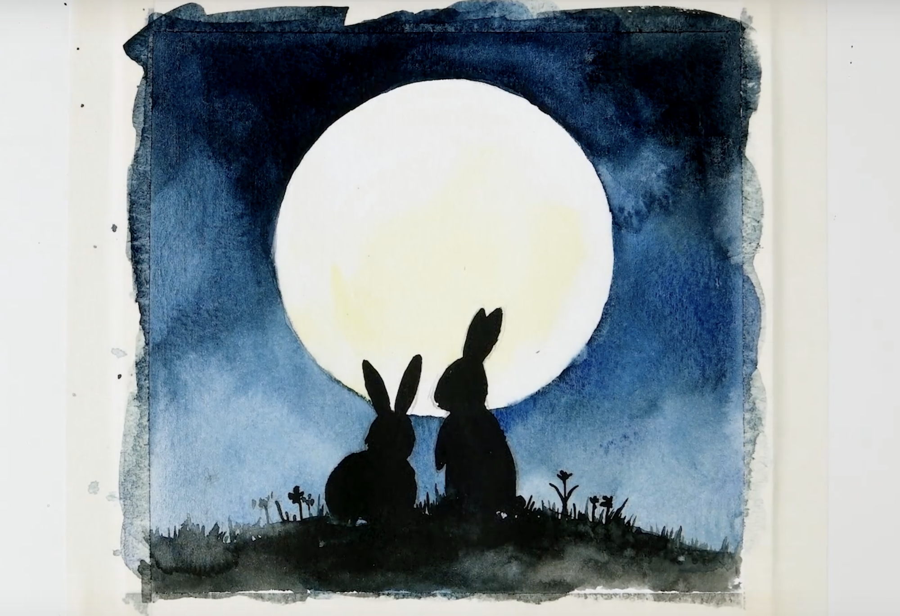

My hobbies
Painting
Looking at a great painting, it can be hard to remember that every artist was an absolute beginner at some stage. Everyone has to start somewhere, and it's perfectly okay if you don't know what kind of paint to use on your first canvas. I do different styles of drawing like:
- Oil Paint
- Acrylic Paint
- Water Color
Traveling
Some people would choose to spend their time and money on material possessions, such as a new car or a game console,rather than on a trip to a new place. Unfortunately, many don't realize just how rewarding and incredible traveling can really be. Going to new places is beneficial in all aspects of one's life -- socially, intellectually and even emotionally. Each one of you should have traveling as a hobby because,
- Travelling helps you connect with new people, which helps to improve my interpersonal skills.
- Travelling makes you independent and build your confidence.
- It's like food for the soul which is necessary to de-stress and then get back to your job with new renewed vigour.
Listening Music
Listening to music is not just a hobby but a passion that can never tire the soul of the music lover. Rhythm is the core of music that actually stimulates your brainwaves and heartbeats into a happy state. At times even if the lyrics slip out of your mind the melody lingers beautifully in the memory of the music lover. This hobby has many advantages
- Music Increases Happiness
- Music Decreases Stress While Increasing Overall Health
- Music Reduces Depression
Academic History
Educational Qualification
- Master of Technology in Computer science and Engineering
- Graduated from Amrita Viswa Vidya Peetam on 2015.
- Bachelor of Technology in Computer science and Engineering
- Graduated from Kerala University on 2012
For more information about how to improve ones hobbies, visit lifehack.org